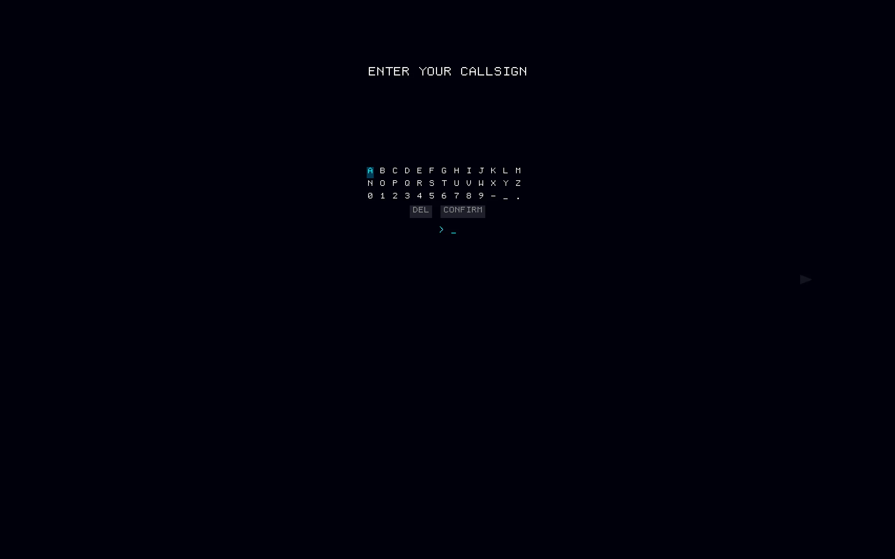

I wanted to build a game where the physics weren't decorative. A lot of space games put a black hole in the background and give it a slight pull on the player's ship, but it doesn't actually change how you think about the game. The idea behind Gravity Well Arena was to take Schwarzschild time dilation, the real thing from general relativity, and make it the mechanic that every other system depends on.

{kind=link}
You pilot a ship around black holes. When you dive closer to a gravity well, the simulation dilates: the external universe speeds up relative to you. Enemies move faster, projectiles close in quicker, everything outside your local frame accelerates. But your own controls stay at normal speed, because the game runs on the player's proper time. This creates a situation where going deeper into a well gives you a tactical edge (from your perspective, the world is in slow motion and you have more time to aim) but simultaneously makes the environment more dangerous (from the world's perspective, you're reacting in slow motion). Balancing these two effects is the entire game.
How the physics work

{kind=link}
Orbital mechanics use Verlet integration. The time dilation factor is computed from the Schwarzschild metric directly, not from a hand-tuned curve. At the Rim (the outermost zone), dilation is minimal. In the Belt, it becomes noticeable. In the Furnace, the universe is moving fast enough that you have to plan moves carefully. In the Abyss, close to the event horizon, the effect is extreme.
Some levels have two black holes orbiting each other. Binary systems create chaotic dynamics where the dilation fields overlap and interfere. You can slingshot between the two wells, picking up speed from one and using the other's dilation to create a timing advantage, but the trajectories become very difficult to predict. I spent a lot of time playtesting these levels because the emergent behavior kept surprising me.
Weapons
There are six weapons, each designed to interact with gravity wells differently. The railgun fires a fast kinetic projectile that curves in gravitational fields. The mass driver is slower but heavier. The photon lance fires along null geodesics, which means it follows the curvature of spacetime. In practice, you can shoot it around a black hole and hit a target on the other side, which took some iteration to balance. The gravity bomb drops a temporary point mass that distorts nearby trajectories. The impulse rocket is a guided missile that does little direct damage but delivers an orbital kick on impact, shoving targets deeper into the gravity well. The tidal mine settles into a stable orbit and detonates when something passes at a different altitude, dealing damage proportional to the altitude difference.
The weapon balance ended up being shaped by the dilation mechanic in ways I didn't fully anticipate. Weapons that are slow in flat space become threatening in dilated space because the target is experiencing compressed time. This meant that the "weak" weapons (mines, gravity bombs) become the most dangerous in the deep zones where dilation is strongest.
Bot archetypes
I built six AI personalities that each try to exploit the time dilation mechanic from a different angle. The Skirmisher stays mobile and avoids committing to deep orbits. The Diver rushes into the Furnace or Abyss for burst damage. The Vulture stays at the Rim and picks off weakened targets at range. The Anchor locks down a zone with area-denial weapons. The Swarm uses multiple small ships in coordinated formations. The Commander is an elite solo operator that actively counters the player's depth strategy, climbing when you dive and diving when you climb.
The Diver was the hardest to tune. Its strategy requires going deep, which means high dilation, which means everything outside is fast. If the Diver's aggression threshold is too high, it suicides into the Abyss and can't react to incoming fire. If it's too low, it never commits and plays like a worse Skirmisher. Getting the balance took many iterations of adjusting how the bot evaluates the risk of its current depth against the potential damage output.
Procedural audio
There are zero audio files in the repository. Every sound, engine hum, weapon discharge, explosion, ambient tone, is synthesized at runtime. I initially planned to add audio files later and used procedural synthesis as a placeholder, but the procedural sounds ended up sounding better than anything I found in free asset libraries. The engine hum pitch-shifts with dilation, which gives you an audio cue for how deep you are without looking at the HUD. That was accidental but it works.
Everything else
Rendering uses wgpu with custom WGSL shaders for gravitational lensing (background stars distort near wells), bloom, and accretion disk effects. Levels are procedurally generated from deterministic seeds. There's a four-act narrative delivered through mission briefings and radio chatter, which was an interesting constraint to work within given the procedural structure.
Global leaderboards run on a Cloudflare Worker backed by D1 SQLite. Server-side validation checks score plausibility (is this score achievable on this seed?) rather than replaying the entire game. The leaderboard is offline-first: scores save locally and sync to the cloud when connectivity is available. Player identity is UUID-based, no login required.
The game compiles to native binaries for Windows, macOS, and Linux, and also to WebAssembly for the browser version.